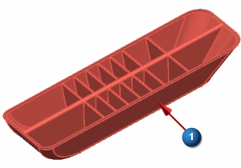
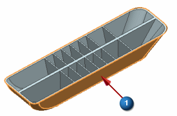
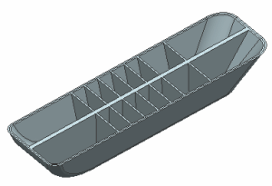

Midsurface the outer walls
Because the outer walls are about 2.5 mm thick, the lateral ribs are about 1.5 mm thick, and the central rib is about 4 mm thick, use thickness as the criterion for selecting face pairs.
Midsurface by Face Pairs (Geometry Preparation group)
-



Set the face pairing Strategy to Manual so that you can manually pair selected faces.
-
Strategy
Manual

Use Tangent Faces to select all faces on the outside of the part with one face selection.
-
Face Rule (Top Border bar)
Tangent Faces
-

Rather than selecting individual faces for the face pairs, use the Find Side 2 Face Candidates option to select pairs based on their thickness.
-
Side 2 Search
-
Search Distance
3
-
By specifying a search distance of 3 mm, the software will pair faces separated by 3 mm or less with the faces on the outside of the part.
-
Find Side 2 Face Candidates
Note
Under Face pairing, you can see that there are now 60 side 2 faces that have been selected.
-
Create Face Pair

-
The midsurface is now complete for the outer walls of the part. Next, you will create midsurfaces on the internal ribs of the part. Leave the Midsurface by Face Pairs dialog box open for the next step.